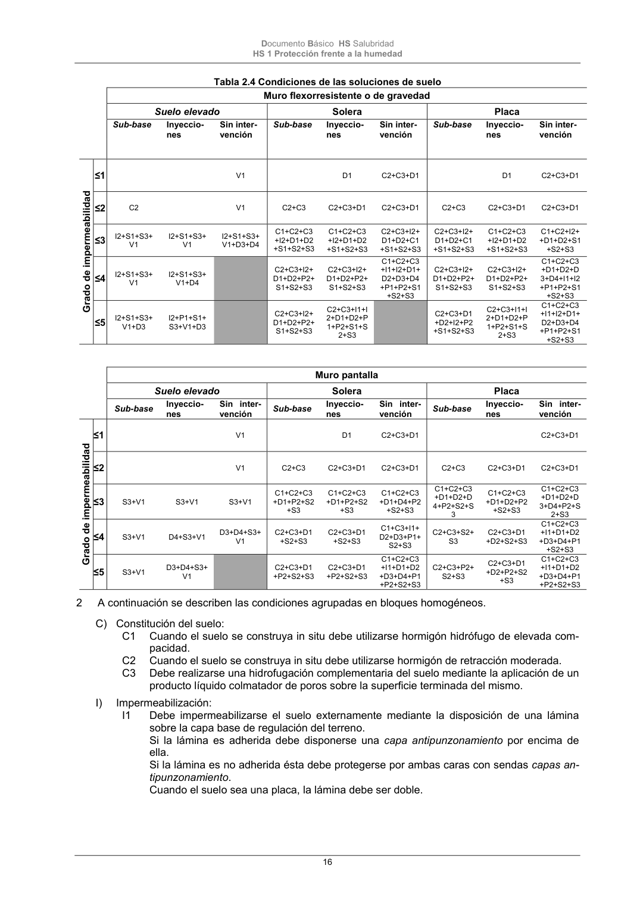
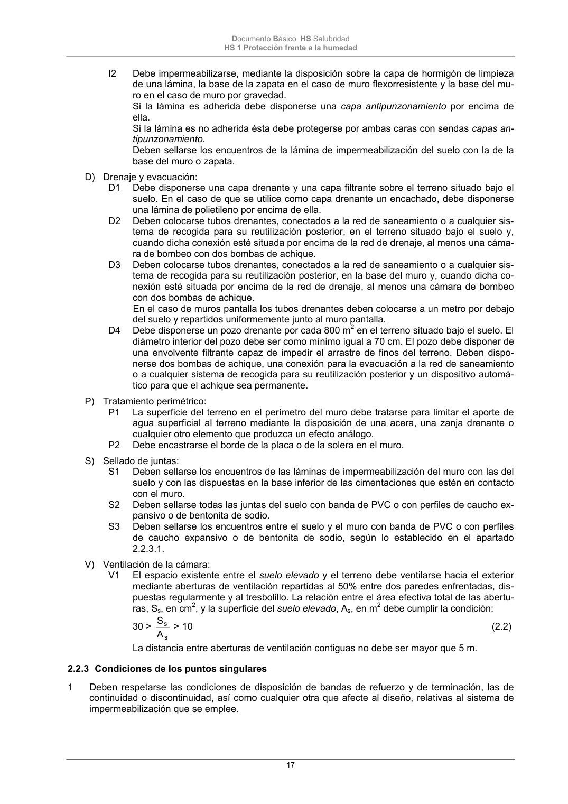

DB-HS · 2.2.2 Condiciones de las soluciones constructivas · versión 2022-06-14 · capa oficial
Formatos: JSON compacto · Markdown · PDF fuente
Ámbito del documento · texto del ámbito · documento y tablas
ID técnico a0043 · PDF pág. 15-17 · jerarquía no validada por persona · contrastado con el literal de la página 15 (candidato tipográfico); no validado por persona · padre: raíz
2.2.2 Condiciones de las soluciones constructivas 1 Las condiciones exigidas a cada solución constructiva, en función del tipo de muro, del tipo de sue- lo, del tipo de intervención en el terreno y del grado de impermeabilidad, se obtienen en la tabla 2.4. Las casillas sombreadas se refieren a soluciones que no se consideran aceptables y las casillas en blanco a soluciones a las que no se les exige ninguna condición para los grados de impermeabili- dad correspondientes. Documento Básico HS Salubridad HS 1 Protección frente a la humedad 16 Tabla 2.4 Condiciones de las soluciones de suelo Muro flexorresistente o de gravedad Suelo elevado Solera Placa Sub-base Inyeccio- nes Sin inter- vención Sub-base Inyeccio- nes Sin inter- vención Sub-base Inyeccio- nes Sin inter- vención Grado de impermeabilidad ≤1 V1 D1 C2+C3+D1 D1 C2+C3+D1 ≤2 C2 V1 C2+C3 C2+C3+D1 C2+C3+D1 C2+C3 C2+C3+D1 C2+C3+D1 ≤3 I2+S1+S3+ V1 I2+S1+S3+ V1 I2+S1+S3+ V1+D3+D4 C1+C2+C3 +I2+D1+D2 +S1+S2+S3 C1+C2+C3 +I2+D1+D2 +S1+S2+S3 C2+C3+I2+ D1+D2+C1 +S1+S2+S3 C2+C3+I2+ D1+D2+C1 +S1+S2+S3 C1+C2+C3 +I2+D1+D2 +S1+S2+S3 C1+C2+I2+ +D1+D2+S1 +S2+S3 ≤4 I2+S1+S3+ V1 I2+S1+S3+ V1+D4 C2+C3+I2+ D1+D2+P2+ S1+S2+S3 C2+C3+I2+ D1+D2+P2+ S1+S2+S3 C1+C2+C3 +I1+I2+D1+ D2+D3+D4 +P1+P2+S1 +S2+S3 C2+C3+I2+ D1+D2+P2+ S1+S2+S3 C2+C3+I2+ D1+D2+P2+ S1+S2+S3 C1+C2+C3 +D1+D2+D 3+D4+I1+I2 +P1+P2+S1 +S2+S3 ≤5 I2+S1+S3+ V1+D3 I2+P1+S1+ S3+V1+D3 C2+C3+I2+ D1+D2+P2+ S1+S2+S3 C2+C3+I1+I 2+D1+D2+P 1+P2+S1+S 2+S3 C2+C3+D1 +D2+I2+P2 +S1+S2+S3 C2+C3+I1+I 2+D1+D2+P 1+P2+S1+S 2+S3 C1+C2+C3 +I1+I2+D1+ D2+D3+D4 +P1+P2+S1 +S2+S3 Muro pantalla Suelo elevado Solera Placa Sub-base Inyeccio- nes Sin inter- vención Sub-base Inyeccio- nes Sin inter- vención Sub-base Inyeccio- nes Sin inter- vención Grado de impermeabilidad ≤1 V1 D1 C2+C3+D1 C2+C3+D1 ≤2 V1 C2+C3 C2+C3+D1 C2+C3+D1 C2+C3 C2+C3+D1 C2+C3+D1 ≤3 S3+V1 S3+V1 S3+V1 C1+C2+C3 +D1+P2+S2 +S3 C1+C2+C3 +D1+P2+S2 +S3 C1+C2+C3 +D1+D4+P2 +S2+S3 C1+C2+C3 +D1+D2+D 4+P2+S2+S 3 C1+C2+C3 +D1+D2+P2 +S2+S3 C1+C2+C3 +D1+D2+D 3+D4+P2+S 2+S3 ≤4 S3+V1 D4+S3+V1 D3+D4+S3+ V1 C2+C3+D1 +S2+S3 C2+C3+D1 +S2+S3 C1+C3+I1+ D2+D3+P1+ S2+S3 C2+C3+S2+ S3 C2+C3+D1 +D2+S2+S3 C1+C2+C3 +I1+D1+D2 +D3+D4+P1 +S2+S3 ≤5 S3+V1 D3+D4+S3+ V1 C2+C3+D1 +P2+S2+S3 C2+C3+D1 +P2+S2+S3 C1+C2+C3 +I1+D1+D2 +D3+D4+P1 +P2+S2+S3 C2+C3+P2+ S2+S3 C2+C3+D1 +D2+P2+S2 +S3 C1+C2+C3 +I1+D1+D2 +D3+D4+P1 +P2+S2+S3 2 A continuación se describen las condiciones agrupadas en bloques homogéneos. C) Constitución del suelo: C1 Cuando el suelo se construya in situ debe utilizarse hormigón hidrófugo de elevada com- pacidad. C2 Cuando el suelo se construya in situ debe utilizarse hormigón de retracción moderada. C3 Debe realizarse una hidrofugación complementaria del suelo mediante la aplicación de un producto líquido colmatador de poros sobre la superficie terminada del mismo. I) Impermeabilización: I1 Debe impermeabilizarse el suelo externamente mediante la disposición de una lámina sobre la capa base de regulación del terreno. Si la lámina es adherida debe disponerse una capa antipunzonamiento por encima de ella. Si la lámina es no adherida ésta debe protegerse por ambas caras con sendas capas an- tipunzonamiento. Cuando el suelo sea una placa, la lámina debe ser doble. Documento Básico HS Salubridad HS 1 Protección frente a la humedad 17 I2 Debe impermeabilizarse, mediante la disposición sobre la capa de hormigón de limpieza de una lámina, la base de la zapata en el caso de muro flexorresistente y la base del mu- ro en el caso de muro por gravedad. Si la lámina es adherida debe disponerse una capa antipunzonamiento por encima de ella. Si la lámina es no adherida ésta debe protegerse por ambas caras con sendas capas an- tipunzonamiento. Deben sellarse los encuentros de la lámina de impermeabilización del suelo con la de la base del muro o zapata. D) Drenaje y evacuación: D1 Debe disponerse una capa drenante y una capa filtrante sobre el terreno situado bajo el suelo. En el caso de que se utilice como capa drenante un encachado, debe disponerse una lámina de polietileno por encima de ella. D2 Deben colocarse tubos drenantes, conectados a la red de saneamiento o a cualquier sis- tema de recogida para su reutilización posterior, en el terreno situado bajo el suelo y, cuando dicha conexión esté situada por encima de la red de drenaje, al menos una cáma- ra de bombeo con dos bombas de achique. D3 Deben colocarse tubos drenantes, conectados a la red de saneamiento o a cualquier sis- tema de recogida para su reutilización posterior, en la base del muro y, cuando dicha co- nexión esté situada por encima de la red de drenaje, al menos una cámara de bombeo con dos bombas de achique. En el caso de muros pantalla los tubos drenantes deben colocarse a un metro por debajo del suelo y repartidos uniformemente junto al muro pantalla. D4 Debe disponerse un pozo drenante por cada 800 m2 en el terreno situado bajo el suelo. El diámetro interior del pozo debe ser como mínimo igual a 70 cm. El pozo debe disponer de una envolvente filtrante capaz de impedir el arrastre de finos del terreno. Deben dispo- nerse dos bombas de achique, una conexión para la evacuación a la red de saneamiento o a cualquier sistema de recogida para su reutilización posterior y un dispositivo automá- tico para que el achique sea permanente. P) Tratamiento perimétrico: P1 La superficie del terreno en el perímetro del muro debe tratarse para limitar el aporte de agua superficial al terreno mediante la disposición de una acera, una zanja drenante o cualquier otro elemento que produzca un efecto análogo. P2 Debe encastrarse el borde de la placa o de la solera en el muro. S) Sellado de juntas: S1 Deben sellarse los encuentros de las láminas de impermeabilización del muro con las del suelo y con las dispuestas en la base inferior de las cimentaciones que estén en contacto con el muro. S2 Deben sellarse todas las juntas del suelo con banda de PVC o con perfiles de caucho ex- pansivo o de bentonita de sodio. S3 Deben sellarse los encuentros entre el suelo y el muro con banda de PVC o con perfiles de caucho expansivo o de bentonita de sodio, según lo establecido en el apartado 2.2.3.1. V) Ventilación de la cámara: V1 El espacio existente entre el suelo elevado y el terreno debe ventilarse hacia el exterior mediante aberturas de ventilación repartidas al 50% entre dos paredes enfrentadas, dis- puestas regularmente y al tresbolillo. La relación entre el área efectiva total de las abertu- ras, Ss, en cm2, y la superficie del suelo elevado, As, en m2 debe cumplir la condición: 30 > s s A S > 10 (2.2) La distancia entre aberturas de ventilación contiguas no debe ser mayor que 5 m.


PDF fuente redistribuible: copia fiel enlazada en esta página (SHA256 verificado).